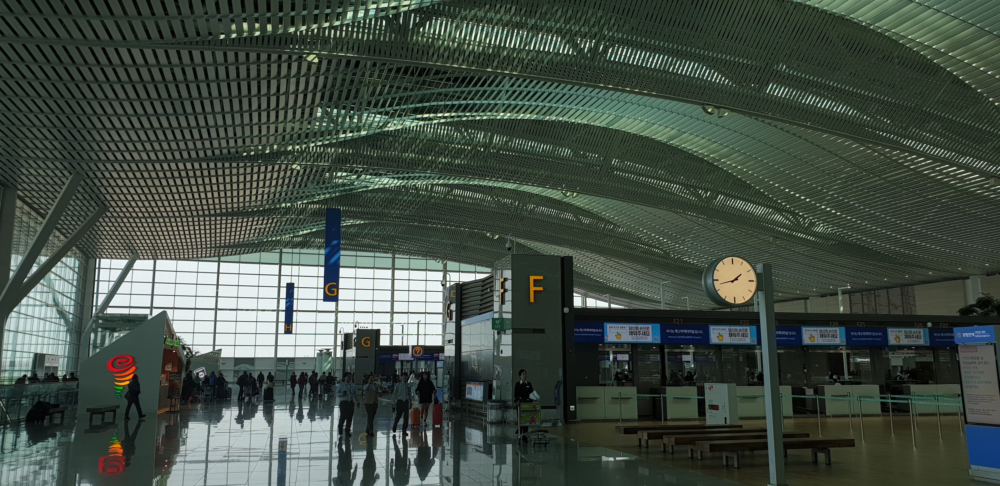

시애틀 (1/20 ~ 1/23)

출발 전 인천공항의 모습이다.

이잇후~ 드디어 미국에 왔다. 비행기가 착륙하기 30분 전부터 설렘 반 긴장
반의 마음을 안고 창밖으로 시애틀의 산과 바다, 평야를 내려다보았다.
미 북서부의 눈 덮인 겨울산과 바다가 침엽수림 사이로 마주 보고 있었고
위대한 자연의 선물에 인간은 미약하게나마 높게 솟은 마천루들로 보답하고
있었다.

(9.11 테러 이후 강화되었다는 미국의 입국심사. 그토록 기다리던 파란불이 가끔 노란 불로 바뀌어 옆방으로 끌려가는 사람들을 볼 때마다 무언의 긴장감이 마음을 짓눌렀다.)
착륙은 비행기와 기장님이 하나가 된 신의 경지, 마치 물아일체의 경이로운 착륙이었다. 필자(택)와 희원이는 비행기 바퀴가 언제 땅에 닿을 것인지 내기를 걸었지만 그 승부는 승자도 패자도 없이 감탄만 남았다(가능하다면 이 자리를 빌려 기장님께 경의를 표하고 싶다). 9시간 50분의 비행을 끝내고 마침내 미국에 발을 디딘 순간, 우리가 처음으로 마주한 것은 자유의 여신상도(물론 여긴 시애틀이니까ㅎㅎ) 그랜드캐니언도(역시 시애틀이니까^^) 트럼프 사진도 아닌 엄청난 인파였다. 정말로 줄의 끝이 보이지 않는 아비규환의 상황 속, 어제도 오늘도 내일도 그럴 것이라는 듯 아무렇지 않게 태평한 얼굴로 사람들 사이에서 줄을 통제하고 능숙하게 관광비자와 취업, 유학 비자를 분리해 내는 아메리칸들만 분주히 움직일 뿐이었다. 우리는 입국 신고서와 여권을 손에 꼭 쥔 채 인파에 2두(頭)를 보태는데 가담하기로 마음먹었다.
입국심사는 예상했던 것보다 수월했다. 나를 담당한 입국심사관은 아시아인의 피가 흐를 것으로 생각되는 외모를 지니고 나의 구린 영어 발음도 천천히 귀 기울여 들어준 착한 아저씨였다. 앞으로 들릴 도시와 도시 간 이동 수단, 렌터카 이용 유무, 일행의 인원수 등 매우 가벼운 질문들에 간단히 대답하고 나니 여권에 도장을 쾅! 찍어주었다. 난 이제 합법적으로 미국 땅을 밟게 된 것이다! 이잇후~
이제 와서 돌이켜보니 길지 않은 시간이었지만 비행기에서부터 입국심사가 완료될 때까지 매우 피곤했던 긴 기다림 속에서 무의식적으로 내 눈에 담긴 모습들이 앞으로 이 여행기에 담길 미국의 정체성이었다. 하늘에서 내려다본 미국은 천혜의 자연환경(바다, 산림, 호수, 평야)을 품고 있으면서도 그와 동시에 하늘을 찌르는 고층건물 또한 가지고 있었다. 자연과 자연이 품은 선물에 반한 인간들은 기회의 땅 America를 향해 대서양을 건너(그보다 더 오래전엔 베링 해를 건너) 이 땅에 도착했다. 그 이후에도 그들은 금을 찾아, 은을 찾아 서부로 나아갔고 그로 인해 만들어진 정착촌들의 약 200년 뒤 모습이 우리가 여행할 시애틀, 포틀랜드, 샌프란시스코 등 미서부의 굵직굵직한 도시들의 현재이다. 비행기에서는 ‘과거’ 미국이 사람들을 끌어모았던 힘을 보았다면 입국 심사장에서는 ‘현재’ 미국을 향해 모인 사람들을 마주할 수 있었다. 우리와 같은 관광객 말고도 그곳엔 새로운 일터, 배움의 장 즉 새 인생, 목표, 이상향을 좇아온 사람들도 많았다. 그리고 그 수는 북적이던 인파를 보자마자 온몸으로 강렬히 느낄 수 있었다. 18세기 미국의 골드러시는 21세기에도 활발히 일어나고 있다. 이제는 ‘현재’ 미국이 사람들을 끌어모으는 힘을 마주하러 갈 차례이다. 21세기의 금은 무엇일까. 공항철도를 타고 시애틀 시내로 나오는 우리의 두 눈은 배우 클린트 이스트우드가 원했던 눈빛이 아니었을까...